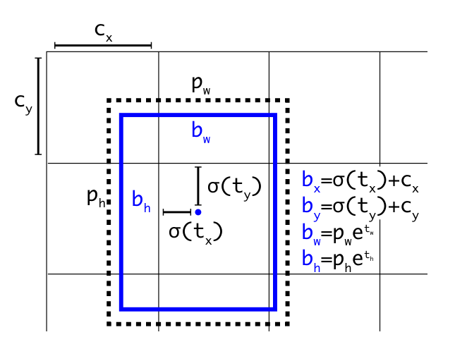
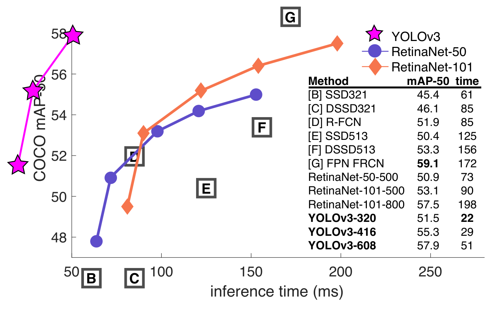
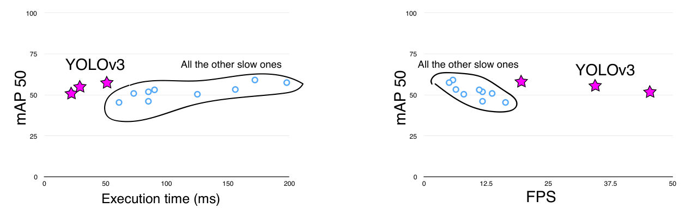
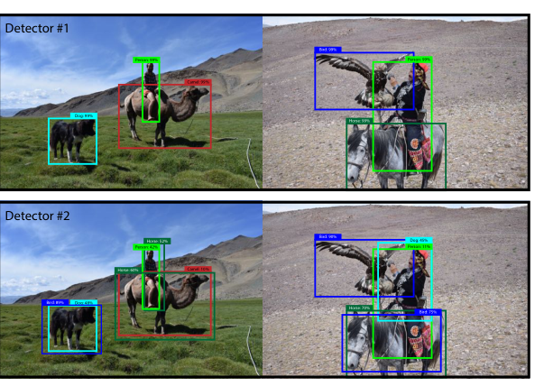

YOLOv3: 점진적 개선 (An Incremental Improvement)
YOLOv3: An Incremental Improvement
YOLOv3는 기존 YOLOv2를 바탕으로 여러 설계 개선과 더 깊고 효율적인 백본 네트워크(Darknet-53)를 결합해 정확도와 속도의 균형을 끌어올린 객체 탐지 기술 보고서입니다.
- 다중 스케일 예측 (Predictions Across Scales): 특징 피라미드 네트워크(FPN, Feature Pyramid Network)와 유사하게 3개의 서로 다른 스케일에서 경계 상자를 예측하여 기존 YOLO의 약점이었던 작은 객체 탐지 성능($AP_S$)을 크게 개선했습니다.
- 백본 Darknet-53 도입: $3 \times 3$ 및 $1 \times 1$ 합성곱과 잔차 연결(Residual connection)을 결합한 53개 합성곱 계층의 Darknet-53을 사용하여 ResNet-101/152와 대등한 정확도를 유지하면서도 약 $1.5\text{--}2\times$ 더 빠른 속도를 달성했습니다.
- 다중 레이블 분류 (Multilabel Classification): 클래스 예측에서 Softmax 대신 독립적인 로지스틱 분류기와 이진 교차 엔트로피(BCE, Binary Cross-Entropy) 손실을 사용해 Open Images처럼 레이블이 중첩되는 데이터셋에도 유연하게 대응합니다.
- 주요 성능: $320 \times 320$ 입력에서 $22\,\text{ms}$ 만에 $28.2\,\text{mAP}$를 기록(SSD와 동등한 정확도, $3\times$ 빠른 속도)했으며, $608 \times 608$에서는 Titan X 기준 $51\,\text{ms}$ 만에 $57.9\,\text{AP}_{50}$을 달성해 RetinaNet($57.5\,\text{AP}_{50}$, $198\,\text{ms}$)과 비슷한 $\text{AP}_{50}$ 성능을 $3.8\times$ 빠르게 냈습니다.
초록 (Abstract)
우리는 YOLO에 몇 가지 업데이트를 적용한 결과를 소개한다! 성능을 더 좋게 만들기 위해 자잘한 설계 변경들을 여럿 적용했고, 상당히 괜찮은 새로운 네트워크도 학습시켰다. 지난 버전보다는 조금 더 커졌지만, 그만큼 더 정확해졌다. 그렇다고 느려진 것은 아니니 걱정하지 않아도 된다. $320 \times 320$ 해상도에서 YOLOv3는 $22\,\text{ms}$ 만에 $28.2\,\text{mAP}$로 동작하여, SSD와 동등한 정확도를 보이면서도 3배 더 빠르다. 예전의 $0.5\text{ IOU}$ 기준 $\text{mAP}$ 탐지 지표를 기준으로 보면 YOLOv3는 꽤 뛰어나다. Titan X GPU에서 $51\,\text{ms}$ 만에 $57.9\,\text{AP}_{50}$을 달성하여, $198\,\text{ms}$ 만에 $57.5\,\text{AP}_{50}$을 기록한 RetinaNet과 비슷한 성능을 보이면서도 $3.8\times$ 더 빠르다. 늘 그렇듯이 모든 코드는 온라인(https://pjreddie.com/yolo/)에 공개되어 있다.
1. 서론 (Introduction)
살다 보면 1년쯤 적당히 대충 넘기게 되는 해도 있지 않은가? 올해 나는 연구를 아주 많이 하지는 않았다. 트위터(Twitter)에서 시간을 꽤 많이 보냈고, GAN도 조금 가지고 놀았다. 작년 연구들[12, 1]에서 남은 추진력이 조금 있어서 YOLO를 몇 가지 개선할 수는 있었다. 하지만 솔직히 말하면 엄청나게 흥미로운 혁신은 없고, 성능을 조금씩 더 좋게 만드는 자잘한 변경들의 모음일 뿐이다. 다른 사람들의 연구도 조금 도왔다.
사실 바로 그 점이 오늘 이 글을 쓰게 된 이유다. 카메라 레디(camera-ready) 마감 시한[4]이 다가왔는데 내가 YOLO에 적용한 여러 업데이트들을 인용해야 할 필요가 생겼고, 막상 인용할 출처가 없었다. 그러니 이제 기술 보고서(TECH REPORT)를 볼 준비를 하라!
기술 보고서의 좋은 점은 서론이 길 필요가 없다는 것이다. 여러분 모두 우리가 왜 여기 있는지 이미 알고 있으니까. 그래서 이 서론의 마지막 문단은 논문의 나머지 구성을 안내하는 이정표 역할만 하겠다. 먼저 YOLOv3의 핵심 내용(what the deal is)을 설명한다. 그다음 우리가 얼마나 잘하는지(how we do)를 보여준다. 시도해 보았지만 잘 작동하지 않았던 것들도 몇 가지 소개한다. 마지막으로 이 모든 것이 어떤 의미를 갖는지 고찰해 본다.
2. 핵심 설계 (The Deal)
YOLOv3의 핵심은 이렇다. 우리는 주로 다른 사람들의 좋은 아이디어들을 가져와 적용했다. 또한 다른 분류기(classifier) 네트워크들보다 더 나은 새로운 분류기 네트워크를 학습시켰다. 여러분이 전체 구조를 이해할 수 있도록 처음부터 끝까지 차근차근 설명하겠다.

2.1. 경계 상자 예측 (Bounding Box Prediction)
YOLO9000을 따라 우리 시스템은 차원 클러스터(dimension clusters)를 앵커 박스(anchor boxes)로 사용하여 경계 상자(bounding box)를 예측한다[15]. 네트워크는 각 경계 상자에 대해 4개의 좌표 $t_x, t_y, t_w, t_h$를 예측한다. 그리드 셀(cell)이 이미지의 좌측 상단 모서리로부터 $(c_x, c_y)$만큼 떨어져 있고, 경계 상자 사전 확률(bounding box prior, 앵커)의 너비와 높이가 $p_w, p_h$라면 예측값은 다음과 같이 변환된다.
$$b_x = \sigma(t_x) + c_x$$ $$b_y = \sigma(t_y) + c_y$$ $$b_w = p_w e^{t_w}$$ $$b_h = p_h e^{t_h}$$학습 과정에서는 제곱 오차 합(sum of squared error) 손실 함수를 사용한다. 어떤 좌표 예측에 대한 정답(ground truth)이 $\hat{t}_*$라면, 기울기(gradient)는 정답 상자(ground truth box)로부터 계산한 정답 값에서 우리 모델의 예측값을 뺀 값인 $\hat{t}_* - t_*$가 된다. 이 정답 값은 위의 수식들을 역으로 계산해 쉽게 구할 수 있다.
YOLOv3는 로지스틱 회귀(logistic regression)를 사용하여 각 경계 상자의 객체 존재 점수(objectness score)를 예측한다. 이 점수는 해당 경계 상자 사전(prior)이 다른 어떤 경계 상자 사전보다도 정답 객체와 더 많이 겹칠 때 $1$이어야 한다. 만약 어떤 경계 상자 사전이 최선의 앵커는 아니지만 특정 임곗값 이상으로 정답 객체와 겹친다면, [17]을 따라 그 예측은 손실 계산에서 무시한다. 우리는 임곗값으로 $0.5$를 사용한다. [17]과 달리 우리 시스템은 각 정답 객체마다 단 하나의 경계 상자 사전만 할당한다. 어떤 경계 상자 사전이 정답 객체에 할당되지 않았다면 좌표 예측이나 클래스 예측에 대해서는 손실을 부과하지 않고, 오직 객체 존재(objectness) 손실만 계산한다.

2.2. 클래스 예측 (Class Prediction)
각 경계 상자는 다중 레이블 분류(multilabel classification)를 사용해 상자 안에 포함될 수 있는 클래스들을 예측한다. 우리는 Softmax를 사용하지 않는데, 좋은 성능을 내는 데 불필요하다는 것을 확인했기 때문이다. 대신 단순히 독립적인 로지스틱 분류기(independent logistic classifiers)들을 사용한다. 학습 중에는 클래스 예측을 위해 이진 교차 엔트로피(binary cross-entropy) 손실을 사용한다.
이러한 정식화는 Open Images Dataset[7]처럼 더 복잡한 도메인으로 나아갈 때 도움이 된다. 이 데이터셋에는 중첩되는 레이블(예: Woman과 Person)이 매우 많다. Softmax를 사용하면 각 상자가 정확히 하나의 클래스만 가진다는 가정을 강제하게 되지만, 실제로는 그렇지 않은 경우가 많다. 다중 레이블 접근 방식이 데이터를 더 잘 모델링한다.
2.3. 다중 스케일 예측 (Predictions Across Scales)
YOLOv3는 3개의 서로 다른 스케일(scale)에서 상자를 예측한다. 우리 시스템은 특징 피라미드 네트워크(FPN, Feature Pyramid Networks)[8]와 유사한 개념을 사용해 이 스케일들로부터 특징을 추출한다. 기본 특징 추출기(base feature extractor) 뒤에 여러 개의 합성곱 계층(convolutional layers)을 추가한다. 그중 마지막 계층은 경계 상자, 객체 존재 여부(objectness), 클래스 예측을 인코딩하는 3차원 텐서(3-d tensor)를 예측한다. COCO[10] 실험에서는 각 스케일마다 3개의 상자를 예측하므로, 텐서 크기는 4개의 경계 상자 오프셋, 1개의 객체 존재 예측, 80개의 클래스 예측을 포함해 $N \times N \times [3 \times (4 + 1 + 80)]$가 된다.
다음으로, 2개 계층 이전의 특징 맵(feature map)을 가져와 $2\times$ 업샘플링(upsample)한다. 또한 네트워크의 더 앞단(earlier)에 있는 특징 맵을 가져와 업샘플링된 특징과 채널 결합(concatenation)으로 병합한다. 이 방식을 통해 업샘플링된 특징으로부터는 더 유의미한 의미론적(semantic) 정보를 얻고, 앞단의 특징 맵으로부터는 더 세밀한(fine-grained) 공간 정보를 얻을 수 있다. 이후 결합된 특징 맵을 처리하기 위해 몇 개의 합성곱 계층을 더 추가하고, 최종적으로 이전과 비슷하지만 크기가 2배인 텐서를 예측한다.
마지막 스케일의 상자를 예측하기 위해 동일한 설계를 한 번 더 수행한다. 따라서 세 번째 스케일에 대한 예측은 이전의 모든 연산 결과뿐만 아니라 네트워크 초기 단계의 세밀한 특징들까지 모두 활용할 수 있다.
경계 상자 사전(priors)을 결정할 때는 여전히 $k$-평균 군집화($k$-means clustering)를 사용한다. 우리는 그저 임의로 9개의 클러스터와 3개의 스케일을 선택하고, 클러스터들을 스케일별로 균등하게 나누어 배분했다. COCO 데이터셋에서 얻은 9개의 클러스터 크기는 다음과 같다: $(10 \times 13)$, $(16 \times 30)$, $(33 \times 23)$, $(30 \times 61)$, $(62 \times 45)$, $(59 \times 119)$, $(116 \times 90)$, $(156 \times 198)$, $(373 \times 326)$.
2.4. 특징 추출기 (Feature Extractor)
특징 추출을 수행하기 위해 새로운 네트워크를 사용한다. 이 새로운 네트워크는 YOLOv2에서 사용된 Darknet-19와 요즘 유행하는 잔차 네트워크(residual network) 구조를 절충한 하이브리드 방식이다. 이 네트워크는 연속적인 $3 \times 3$ 및 $1 \times 1$ 합성곱 계층을 사용하지만, 이제 단축 연결(shortcut connections)도 포함하며 크기 역시 훨씬 크다. 총 53개의 합성곱 계층을 가지고 있어서 우리는 이것을… 자, 두구두구… Darknet-53이라고 부른다!
| 반복 | 계층 유형 (Type) | 필터 수 (Filters) | 크기 (Size) | 출력 크기 (Output) |
|---|---|---|---|---|
| Convolutional | 32 | $3 \times 3$ | $256 \times 256$ | |
| Convolutional | 64 | $3 \times 3 / 2$ | $128 \times 128$ | |
| $1\times$ | Convolutional | 32 | $1 \times 1$ | $128 \times 128$ |
| Convolutional | 64 | $3 \times 3$ | ||
| Residual | — | — | ||
| Convolutional | 128 | $3 \times 3 / 2$ | $64 \times 64$ | |
| $2\times$ | Convolutional | 64 | $1 \times 1$ | $64 \times 64$ |
| Convolutional | 128 | $3 \times 3$ | ||
| Residual | — | — | ||
| Convolutional | 256 | $3 \times 3 / 2$ | $32 \times 32$ | |
| $8\times$ | Convolutional | 128 | $1 \times 1$ | $32 \times 32$ |
| Convolutional | 256 | $3 \times 3$ | ||
| Residual | — | — | ||
| Convolutional | 512 | $3 \times 3 / 2$ | $16 \times 16$ | |
| $8\times$ | Convolutional | 256 | $1 \times 1$ | $16 \times 16$ |
| Convolutional | 512 | $3 \times 3$ | ||
| Residual | — | — | ||
| Convolutional | 1024 | $3 \times 3 / 2$ | $8 \times 8$ | |
| $4\times$ | Convolutional | 512 | $1 \times 1$ | $8 \times 8$ |
| Convolutional | 1024 | $3 \times 3$ | ||
| Residual | — | — | ||
| Avgpool | — | Global | — | |
| Connected | — | 1000 | — | |
| Softmax | — | — | — |
이 새로운 네트워크는 Darknet-19보다 훨씬 강력하면서도 ResNet-101이나 ResNet-152보다 더 효율적이다. 다음은 ImageNet 실험 결과이다.
| 백본 (Backbone) | Top-1 | Top-5 | Bn Ops | BFLOP/s | FPS |
|---|---|---|---|---|---|
| Darknet-19 [15] | 74.1 | 91.8 | 7.29 | 1246 | 171 |
| ResNet-101 [5] | 77.1 | 93.7 | 19.7 | 1039 | 53 |
| ResNet-152 [5] | 77.6 | 93.8 | 29.4 | 1090 | 37 |
| Darknet-53 | 77.2 | 93.8 | 18.7 | 1457 | 78 |
각 네트워크는 동일한 설정으로 학습되었으며, $256 \times 256$ 해상도의 단일 크롭(single crop) 정확도로 평가되었다. 실행 시간은 Titan X에서 $256 \times 256$ 입력 기준으로 측정했다. 결과적으로 Darknet-53은 최신(state-of-the-art) 분류기들과 대등한 성능을 보이면서도 부동소수점 연산량(FLOPs)이 더 적고 속도도 더 빠르다. Darknet-53은 ResNet-101보다 정확도가 높으면서 $1.5\times$ 더 빠르며, ResNet-152와는 비슷한 성능을 보이면서 $2\times$ 더 빠르다.
또한 Darknet-53은 측정된 초당 부동소수점 연산량(BFLOP/s)이 가장 높다. 이는 네트워크 구조가 GPU를 더 잘 활용하도록 설계되어 평가 시 더 효율적이고 결과적으로 더 빠르다는 것을 의미한다. ResNet들은 계층 수가 너무 많아서 그다지 효율적이지 못하기 때문이다.
2.5. 학습 (Training)
우리는 여전히 어려운 부정 샘플 마이닝(hard negative mining) 같은 기법 없이 전체 이미지(full images)를 대상으로 학습한다. 다중 스케일 학습(multi-scale training), 풍부한 데이터 증강(data augmentation), 배치 정규화(batch normalization) 등 표준적인 기법들을 모두 사용한다. 학습과 테스트에는 Darknet 신경망 프레임워크[14]를 사용했다.
3. 성능 평가 (How We Do)
YOLOv3는 꽤 잘 작동한다! 표 3을 보자. COCO의 기묘한 평균 $\text{mAP}$ 지표(average mean AP metric) 기준으로 보면 SSD 계열 모델들과 대등한 수준이면서 속도는 $3\times$ 더 빠르다. 다만 이 지표에서는 RetinaNet 같은 다른 모델들에 비해 여전히 꽤 뒤처진다.
하지만 “예전” 탐지 지표인 $\text{IOU}=0.5$ 기준 $\text{mAP}$(표에서는 $\text{AP}_{50}$)로 보면 YOLOv3는 매우 강력하다. RetinaNet과 거의 대등한 수준이며 SSD 계열들보다 훨씬 앞서 있다. 이는 YOLOv3가 객체에 대해 꽤 괜찮은 경계 상자를 생성하는 데 매우 뛰어난 탐지기임을 보여준다. 반면 IOU 임곗값이 높아질수록 성능이 크게 하락하는데, 이는 YOLOv3가 상자를 객체에 완벽하게 딱 맞춰 정렬(align)하는 데는 어려움을 겪는다는 뜻이다.
과거의 YOLO는 작은 객체(small objects) 탐지에 약했다. 그러나 이제는 그 경향이 역전되었다. 새로운 다중 스케일 예측 덕분에 YOLOv3는 상대적으로 높은 $\text{AP}_S$ 성능을 보인다. 반면 중간 크기($\text{AP}_M$) 및 큰 크기($\text{AP}_L$) 객체에서는 상대적으로 성능이 다소 낮다. 이 원인을 규명하기 위해서는 추가적인 조사가 필요하다.
$\text{AP}_{50}$ 지표에서 정확도 대 속도를 그래프로 그려보면(그림 5 참조 [원문 표기; 실제로는 그림 3]), YOLOv3가 다른 탐지 시스템들에 비해 뚜렷한 장점을 가짐을 알 수 있다. 즉, 더 빠르고 더 정확하다.
| 모델 (Method) | 백본 (backbone) | $\text{AP}$ | $\text{AP}_{50}$ | $\text{AP}_{75}$ | $\text{AP}_S$ | $\text{AP}_M$ | $\text{AP}_L$ |
|---|---|---|---|---|---|---|---|
| 2단계 탐지 방법 (Two-stage methods) | |||||||
| Faster R-CNN+++ [5] | ResNet-101-C4 | 34.9 | 55.7 | 37.4 | 15.6 | 38.7 | 50.9 |
| Faster R-CNN w FPN [8] | ResNet-101-FPN | 36.2 | 59.1 | 39.0 | 18.2 | 39.0 | 48.2 |
| Faster R-CNN by G-RMI [6] | Inception-ResNet-v2 [21] | 34.7 | 55.5 | 36.7 | 13.5 | 38.1 | 52.0 |
| Faster R-CNN w TDM [20] | Inception-ResNet-v2-TDM | 36.8 | 57.7 | 39.2 | 16.2 | 39.8 | 52.1 |
| 1단계 탐지 방법 (One-stage methods) | |||||||
| YOLOv2 [15] | DarkNet-19 [15] | 21.6 | 44.0 | 19.2 | 5.0 | 22.4 | 35.5 |
| SSD513 [11, 3] | ResNet-101-SSD | 31.2 | 50.4 | 33.3 | 10.2 | 34.5 | 49.8 |
| DSSD513 [3] | ResNet-101-DSSD | 33.2 | 53.3 | 35.2 | 13.0 | 35.4 | 51.1 |
| RetinaNet [9] | ResNet-101-FPN | 39.1 | 59.1 | 42.3 | 21.8 | 42.7 | 50.2 |
| RetinaNet [9] | ResNeXt-101-FPN | 40.8 | 61.1 | 44.1 | 24.1 | 44.2 | 51.2 |
| YOLOv3 $608 \times 608$ | Darknet-53 | 33.0 | 57.9 | 34.4 | 18.3 | 35.4 | 41.9 |

4. 시도했으나 잘 작동하지 않았던 것들 (Things We Tried That Didn't Work)
YOLOv3를 개발하는 동안 정말 많은 것을 시도해 보았다. 그중 상당수는 잘 작동하지 않았다. 기억나는 것들을 여기에 정리한다.
- 앵커 박스의 $x, y$ 오프셋 예측: 선형 활성화 함수(linear activation)를 사용해 $x, y$ 오프셋을 상자 너비나 높이의 배수로 예측하는 일반적인 앵커 박스 예측 메커니즘을 시도해 보았다. 이 방식은 모델의 안정성을 떨어뜨렸고 성능도 좋지 않았다.
- 로지스틱 대신 선형 $x, y$ 예측: 로지스틱 활성화 함수 대신 선형 활성화 함수를 사용해 $x, y$ 오프셋을 직접 예측하는 방법을 시도했다. 이로 인해 $\text{mAP}$가 몇 포인트 하락했다.
- Focal Loss: Focal Loss를 사용해 보았더니 $\text{mAP}$가 약 2포인트 떨어졌다. YOLOv3는 객체 존재 예측(objectness predictions)과 조건부 클래스 예측(conditional class predictions)을 분리해 가지고 있기 때문에, Focal Loss가 해결하려는 문제(클래스 불균형)에 이미 강인한 것일 수 있다. 그래서 대부분의 샘플에 대해 클래스 예측에서 발생하는 손실이 없기 때문일까? 아니면 뭔가 다른 이유일까? 완전히 확신할 수는 없다.
- 이중 IOU 임곗값과 정답 할당 (Dual IOU thresholds and truth assignment): Faster R-CNN은 학습 중 두 개의 IOU 임곗값을 사용한다. 예측이 정답과 $0.7$ 이상 겹치면 양성 샘플(positive example), $[0.3\text{--}0.7]$ 구간이면 무시, 모든 정답 객체와 $0.3$ 미만으로 겹치면 음성 샘플(negative example)로 취급한다. 비슷한 전략을 시도해 보았으나 좋은 결과를 얻지 못했다.
우리는 현재의 정식화가 꽤 마음에 들며, 적어도 하나의 지역 최적점(local optima)에는 도달한 것으로 보인다. 이러한 기법들 중 일부는 학습을 안정화하기 위해 약간의 튜닝만 거치면 결국 좋은 결과를 낼 수도 있을 것이다.
5. 이 모든 것이 의미하는 바 (What This All Means)
YOLOv3는 좋은 탐지기다. 빠르고, 정확하다. $\text{IOU}$ $0.5$에서 $0.95$ 사이의 평균을 내는 COCO $\text{AP}$ 지표에서는 그다지 뛰어나지 않지만, 예전의 $0.5\text{ IOU}$ 탐지 지표에서는 매우 뛰어나다.
어쨌든 우리는 왜 지표를 바꾼 걸까? 원래의 COCO 논문에는 “평가 서버가 완성되면 평가 지표에 대한 전체 논의를 추가할 것이다”라는 알쏭달쏭한 문장만 적혀 있다. Russakovsky 등은 인간조차 $\text{IOU}$ $0.3$과 $0.5$를 구분하는 데 어려움을 겪는다고 보고했다! “경계 상자의 $\text{IOU}$가 $0.3$인 것과 $0.5$인 것을 육안으로 검사해 구별하도록 사람을 훈련시키는 것은 놀라울 정도로 어렵다.”[18] 인간도 차이를 구분하기 어려운데, 그게 얼마나 중요한 일일까?
하지만 더 나은 질문은 아마 이것일 것이다. “이제 우리가 이 탐지기들을 손에 넣었는데, 이걸 가지고 무엇을 할 것인가?” 이 연구를 하는 많은 사람들이 구글(Google)과 페이스북(Facebook)에 있다. 적어도 그 기술이 좋은 손에 맡겨져 있어서 여러분의 개인정보를 수확해 어딘가에 팔아넘기는 데에는 절대 쓰이지 않을 테니 다행이라고 생각… 잠깐, 정확히 그런 용도로 쓰일 거라고 말하는 건가?? 아.
음, 비전 연구에 막대한 자금을 대는 또 다른 주체는 군대(military)인데, 그들은 신기술로 수많은 사람을 죽이는 끔찍한 짓 따위는 한 번도 저지른 적이 없… 아, 잠깐만…1
나는 컴퓨터 비전을 사용하는 대부분의 사람들이 국립공원의 얼룩말 수를 세거나[13], 집 안을 돌아다니는 고양이를 추적하는[19] 등 행복하고 선한 일에 기술을 쓰고 있기를 진심으로 바란다. 하지만 컴퓨터 비전은 이미 의심스러운 용도로 사용되고 있으며, 연구자로서 우리는 우리의 연구가 끼칠 수 있는 해악을 최소한 숙고하고 이를 완화할 방법을 고민할 책임이 있다. 우리는 세상에 그 정도 빚은 지고 있다.
끝으로, 나한테 멘션(@)하지 마라. (왜냐하면 내가 마침내 트위터를 그만두었기 때문이다.)
1 저자는 해군연구청(Office of Naval Research)과 구글(Google)의 연구비 지원을 받았다.
참고 문헌 (References)
원 논문에는 총 21편의 참고 문헌이 수록되어 있으며, 그중 핵심적인 기반 논문 및 데이터셋은 다음과 같다.
- [3] C.-Y. Fu et al., DSSD: Deconvolutional Single Shot Detector, arXiv:1701.06659, 2017.
- [5] K. He et al., Deep Residual Learning for Image Recognition, CVPR, 2016.
- [7] I. Krasin et al., OpenImages: A public dataset for large-scale multi-label and multi-class image classification, 2017.
- [8] T.-Y. Lin et al., Feature Pyramid Networks for Object Detection, CVPR, 2017.
- [9] T.-Y. Lin et al., Focal Loss for Dense Object Detection, arXiv:1708.02002, 2017.
- [10] T.-Y. Lin et al., Microsoft COCO: Common Objects in Context, ECCV, 2014.
- [11] W. Liu et al., SSD: Single Shot MultiBox Detector, ECCV, 2016.
- [14] J. Redmon, Darknet: Open Source Neural Networks in C, 2013–2016.
- [15] J. Redmon & A. Farhadi, YOLO9000: Better, Faster, Stronger, CVPR, 2017.
- [17] S. Ren et al., Faster R-CNN: Towards Real-Time Object Detection with Region Proposal Networks, arXiv:1506.01497, 2015.
- [18] O. Russakovsky et al., Best of Both Worlds: Human-Machine Collaboration for Object Annotation, CVPR, 2015.
반론 및 추가 논의 (Rebuttal)

Reddit 댓글 작성자들, 연구실 동료들, 이메일을 보내준 분들, 그리고 복도를 지나치며 외쳐준 모든 분들의 따뜻하고 진심 어린 말씀에 감사드린다. 만약 당신도 나처럼 ICCV 심사를 맡고 있다면, 아마 마지막 주까지 미루다가 결국 분야의 전설 같은 분으로부터 리뷰 좀 빨리 끝내달라는 이메일을 받게 될 37편의 다른 논문을 쥐고 있을 것이다. 그런데 그분이 무슨 말을 하는지 완전히 명확하지 않고 어쩌면 미래에서 온 사람일지도 모른다? 아무튼 이 논문은, 미래가 아닌 과거의 여러분(다만 지금으로부터 아주 조금 앞선 과거)이 해둔 모든 작업 없이는 지금의 모습으로 완성되지 못했을 것이다. 그리고 만약 당신이 이에 대해 트윗을 했다 해도 나는 모를 것이다. 그냥 그렇다는 말이다.
리뷰어 #2(일명 Dan Grossman — 하하, 블라인드 심사를 누가 그렇게 신경 쓰나)는 우리 그래프들이 원점이 0이 아닌 축을 하나도 아니고 두 개나 썼다는 점을 지적해야 한다고 주장했다. Dan, 네 말이 전적으로 맞다. 왜냐하면 우리 모두가 결국 2~3%의 $\text{mAP}$를 두고 아옹다옹하고 있다는 사실을 인정하는 것보다 그렇게 그리는 게 훨씬 더 멋져 보이기 때문이다. 그래도 요청받은 그래프들을 여기에 실었다. FPS를 기준으로 그린 그래프도 하나 끼워 넣었는데, FPS로 그리면 우리가 엄청나게 대단해 보이기 때문이다.
리뷰어 #4(일명 Reddit의 JudasAdventus)는 “재미있는 글이지만 MSCOCO 지표에 대한 반론은 다소 빈약해 보인다”라고 썼다. 그래, Judas, 네가 언젠가 나를 배신할 줄은 늘 알고 있었다. 프로젝트를 진행했는데 결과가 그냥 그럭저럭 나와서 내가 한 일이 사실 꽤 멋지다고 정당화할 방법을 찾아야 할 때가 있지 않은가? 나도 사실상 그걸 하려고 하다가 COCO 지표에 괜히 화풀이를 조금 한 셈이다. 하지만 일단 이 언덕에 진지를 구축했으니 끝까지 싸우다 장렬히 전사할 수밖에.
요점은 이거다. $\text{mAP}$는 이미 어딘가 망가져 있으므로, 이를 업데이트한다면 기존 지표의 문제점을 일부라도 해결하거나 최소한 업데이트된 버전이 어떤 면에서 더 나은지 정당화해야 한다. 내가 문제 삼았던 핵심은 바로 그 정당화의 부재였다. PASCAL VOC의 경우, $\text{IOU}$ 임곗값이 “정답 데이터의 경계 상자 부정확성을 감안하여 의도적으로 낮게 설정되었다”[2]. 그렇다면 COCO는 VOC보다 레이블링이 더 정확한가? COCO에는 분할 마스크(segmentation masks)가 있으므로 레이블을 더 신뢰할 수 있고 따라서 부정확성을 덜 걱정해도 될 가능성은 분명히 있다. 하지만 다시 말하지만, 내가 지적한 문제는 정당화의 부족이었다.
COCO 지표는 더 정밀한 경계 상자를 강조하지만, 그 강조는 필연적으로 다른 무언가, 즉 분류 정확도(classification accuracy)를 덜 중요하게 여긴다는 뜻이 된다. 더 정밀한 경계 상자가 더 나은 분류보다 중요하다고 생각할 만한 타당한 이유가 있는가? 잘못 분류된 사례(miss-classified example)는 약간 어긋난 경계 상자보다 훨씬 더 눈에 띈다.
$\text{mAP}$가 이미 엉망인 이유는 클래스별 순위(per-class rank ordering)만이 중요하기 때문이다. 예를 들어 테스트 세트에 그림 5의 두 이미지만 있다면, $\text{mAP}$ 기준으로는 이 두 결과를 내놓은 두 탐지기가 똑같이 완벽하게 좋은(JUST AS GOOD) 것으로 평가된다.

물론 이것은 $\text{mAP}$의 문제를 분명히 과장한 예시이지만, 내가 뒤늦게 다시 정리한 요점은 “현실 세계(real world)”에서 사람들이 신경 쓰는 것과 현재의 지표 사이에 너무나 명백한 괴리가 있다는 것이다. 따라서 새로운 지표를 만든다면 바로 이러한 괴리에 초점을 맞춰야 한다고 생각한다. 게다가 이미 mean average precision($\text{mAP}$)인데, COCO 지표는 도대체 뭐라고 불러야 하나? average mean average precision(평균 평균 정밀도의 평균)인가?
여기 내 제안이 있다. 사람들이 실제로 신경 쓰는 것은 이미지 하나와 탐지기가 주어졌을 때, 탐지기가 그 이미지 속 객체들을 얼마나 잘 찾아내고 분류하는가이다. 클래스별 $\text{AP}$를 없애고 그냥 전역 평균 정밀도(global average precision)를 계산하면 어떨까? 아니면 이미지 단위로 $\text{AP}$를 계산해 그것의 평균을 내는 것은 어떨까?
어차피 경계 상자(boxes) 따위는 바보 같긴 하다. 나는 아마 마스크(masks) 신봉자인 것 같은데, 다만 YOLO가 마스크를 학습하도록 만들지 못했을 뿐이다.